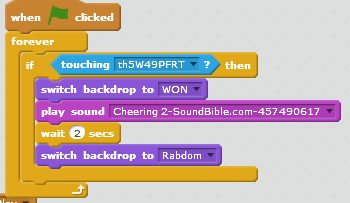
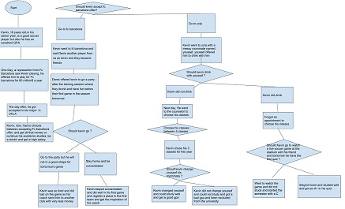

Short story game
Find Players Game

Description Of The Game
The game is about a soccer ball is trying to reach the image of a club logo or players
,
the player gets 1 point when he reach the image in level 1, 2 points in level 2.
After the player won the game he can click on the soccer ball and has to choose a maximum number
from the soccer ball can choose a random number. The game gets more difficult as the soccer
ball continue to reach an image of the player in each level. In level one, the player
loss if the soccer ball touches the red border and he have to restart from the begining. In level
two, if the ball touches the green border he would have to restart from the begining of level two.
Reflexion
I created that game because i thought it is easy, challenging and fun. The inspiration was
that i love watch soccer games and i'am very familiar with club logo and Players.
A successful point in my game was to find the coding for that when the ball when touches the red
border go back to when it starts. Another successful point was to find the coding for that
when it switch to a backgdrop for 2 seconds and then switches to another backdrop.
A big obstacle that faced me was how to make that when the mouse clicks on the ball it asks
is the maximum number and the player can enter it using the keybords and the the ball choose a random
number, i overcome that by researching for similar ideas in scratch projects untill i got the idea.
Another obstacle was to upload a music when the player loss it plays, i overcome that by also searching
for similar ideas in scratch game projects. If i had more time, i would include more levels more difficult
and would include a music plays when the player is playing the game.

This means is that when the player is playing the game (the green flag is clicked) at the final level when
the soccer ball touches that image, the backdrop switches to inform the player that he won the game for 2 sceonds
and then switches to backdrop where he cam click on the soccer ball to get a random number.
What should kevin do?
This is a short story where the main character Kevin is getting accepting in Ucla in hia major but also
Had a very special offer from fc barcelona for 60 millions a year that will make him rich without studying
you have to make kevin decisions in this story, he also must make small desicions with in his life to be successful
